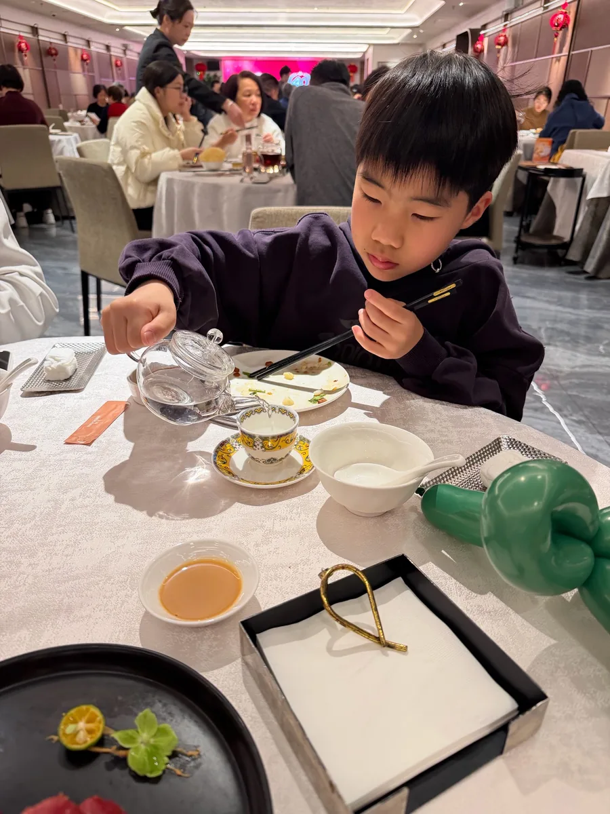
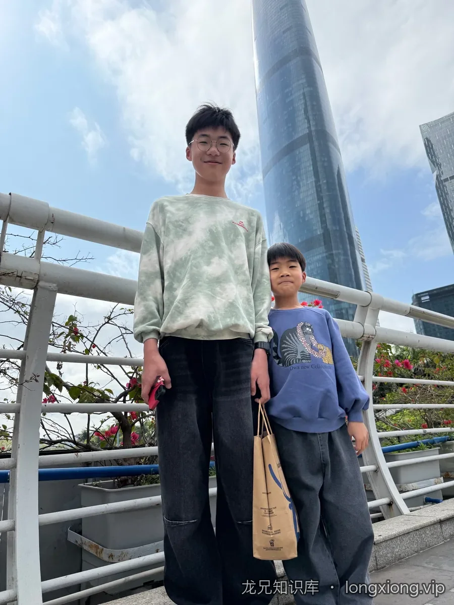

一碗早茶、一座塔、一副大耳机——广州的春节，是从南海渔村的菊花茶开始的。

天河
南海渔村喝早茶，俩小子争着给大人倒茶——老大稳、老二急，水洒了一桌，俩人对视一眼憋不住笑。下午去苹果店，老二戴上大耳机试了试；晚上路过一间酒铺，两杯小酒敬广州。
老大装大人，老二学着哥哥的样子，结果俩人都没装住。
- 南海渔村早茶，菊花一壶、虾饺两笼
- 苹果店里老二试戴大耳机
- 小酒铺两杯琥珀色，敬这座城
珠江新城
广州塔下，老二一个人站定，回头看镜头——那一刻觉得他突然长大了。天阴沉沉的，风从珠江那头吹过来，他一动不动，像在想什么。
老二一个人站在广州塔下，回头看镜头——那一刻觉得他突然长大了。
- 广州塔下，老二一个人站定
- 天阴沉沉的，风从珠江那头吹过来
- 他一动不动，像在想什么
沿途 · 5 张（点开看大图）
广州，一月，一座高楼下和一桌铜锅。

广州
广州，高楼前合影；铜锅小火锅，老婆看菜单，老大刷手机。
俩小子跟着走，老二街边看平板，老大刷手机。
- 高楼前合影
- 铜锅小火锅
- 老二街边看平板
沿途 · 5 张（点开看大图）